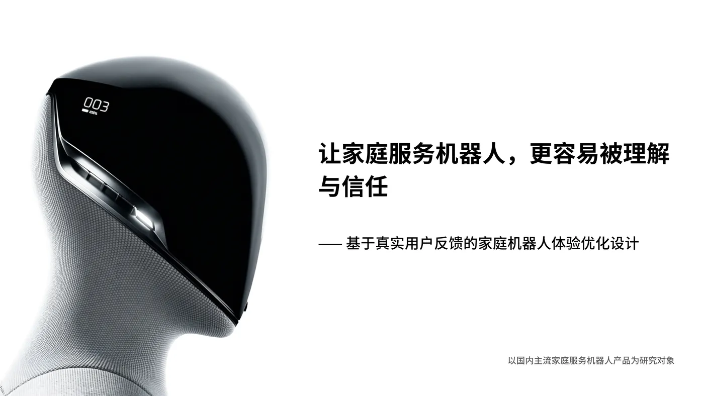
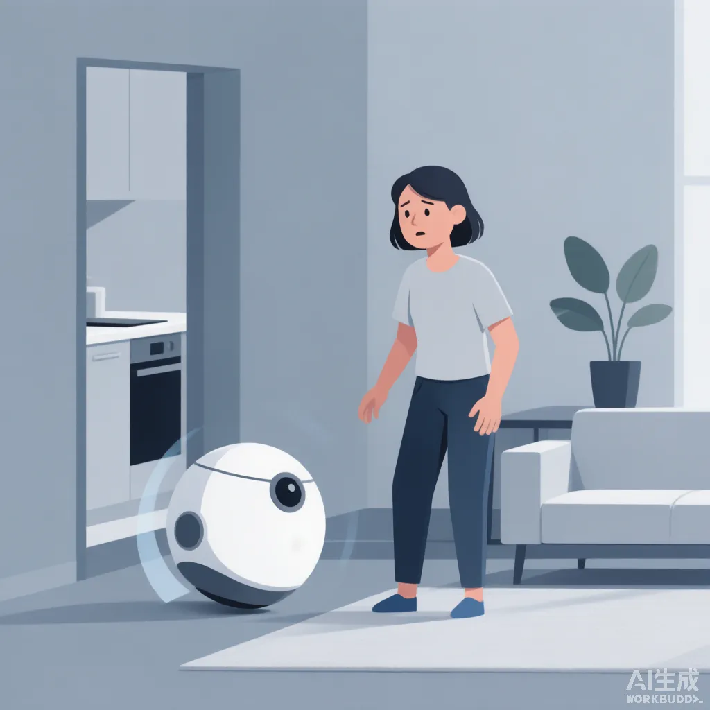
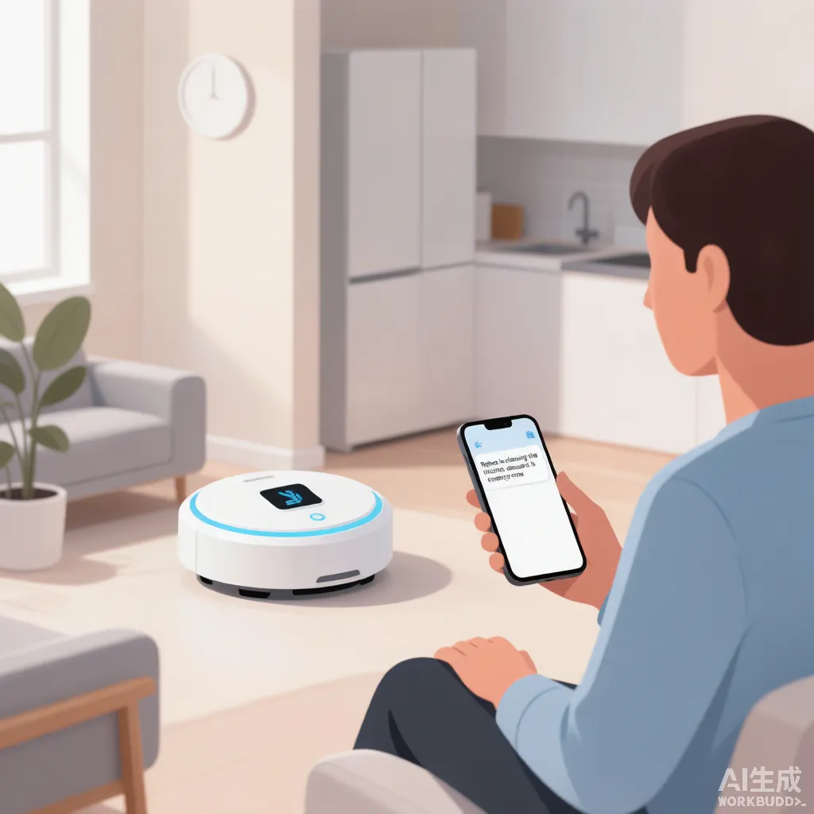
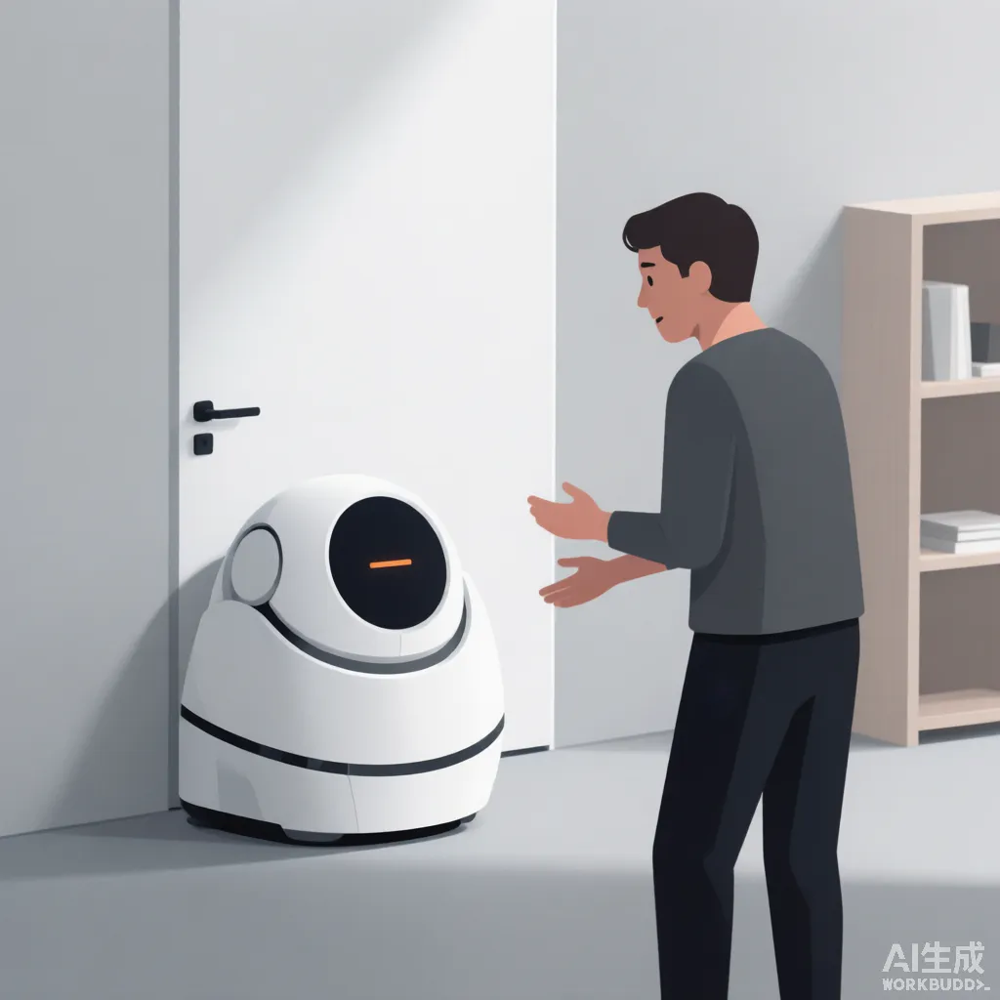
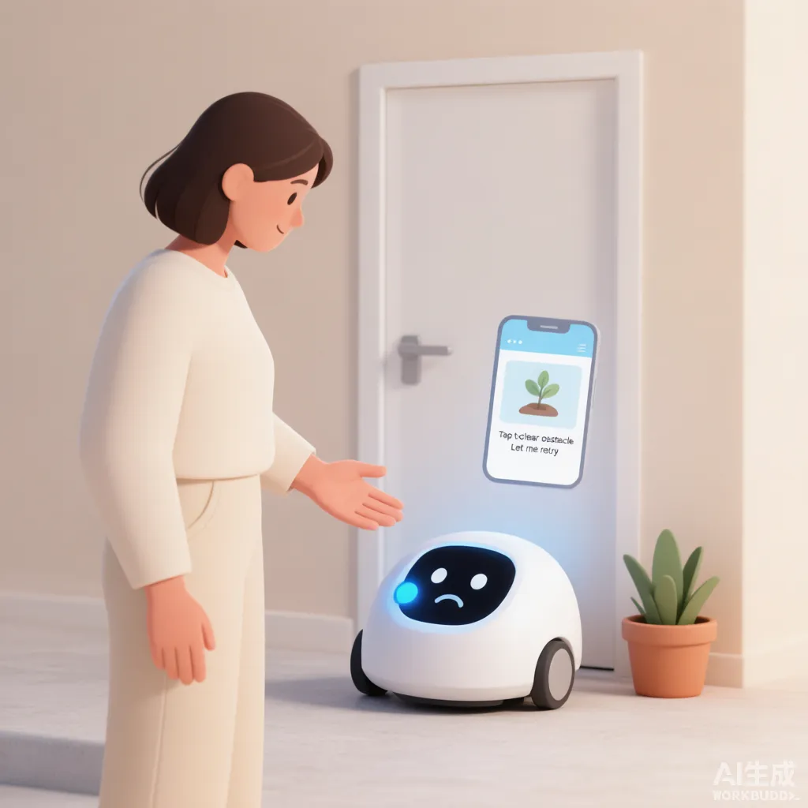

行业研究 · 体验框架Industry Research · Experience Framework
让家庭服务机器人，更容易被理解与信任A Framework for Understanding, Trust & Control
本项目的核心交付是一套「体验框架」，不是某一款机器人的视觉 redesign。框架已建立，研究证据正在收集中——下文标注「待补充」的板块由我后续填入真实用户证据后替换。The core deliverable is an experience framework, not a visual redesign of one product. The framework is set; evidence sections marked "to add" will be replaced with real user evidence later.

今天的家庭机器人竞争，不是谁能完成更多任务，而是谁能真正成为用户生活中值得信赖的伙伴。Today's home-robot race is not about who completes more tasks, but who becomes a truly trusted partner in the user's daily life.
母题 · 人与智能机器THESIS · Human × Intelligent Machines
商业语境 · 为什么是现在Business Context · Why Now
家庭机器人（清洁、陪伴、教育、人形）进入日常是确定性很高的行业趋势。头部产品已把"扫得干净、答得准、手机可控"等功能层做得很成熟——这意味着功能层不再是差异点。真正的未开垦地带在关系层：当机器人越来越自主，人是否理解它在做什么、是否愿意把决定权交给它、如何在需要时收回控制、以及如何随时间建立信任。这恰好对应国内机器人企业校招中反复出现的「用户研究 / 人机交互 / AI Agent」能力需求。Home robots are a clear trend; leading products have matured the functional layer (clean well, answer well, app control). The unclaimed ground is the relational layer: as robots act more autonomously, do people understand them, trust them, know when to retake control, and build a relationship over time. This maps directly to the "user research / HRI / AI Agent" capabilities robot companies ask for in campus hiring.
- 机器人的价值，不在于它拥有多少能力，而在于用户是否知道——什么时候可以把事情交给它。A robot's value isn't how many capabilities it has, but whether the user knows when to hand things over to it.
- 当机器人从等待指令走向主动行动，设计的重点也从"如何控制它"转向"如何与它建立清晰的关系"。As robots move from awaiting commands to acting on their own, design shifts from "how to control it" to "how to build a clear relationship with it".
- 说明书解决的是"机器人有什么功能"；真正的体验要解决的，是"机器人在我的生活中应该如何行动"。The manual answers "what the robot can do"; real experience design answers "how it should act in my life".
- 当机器人开始自主行动，用户真正需要的不是更多解释，而是知道"它为什么这样做、自己什么时候可以改变它"——透明，但不过度打扰。When a robot acts autonomously, users need not more explanation but to know "why it did this, and when I can change it" — transparent, yet never overbearing.
本作品集与姊妹项目《智能汽车共决策框架》同属母题「Human × Intelligent Machines」——智能设备正从工具走向伙伴，UX 的命题也从"人如何操作机器"转向"人与机器如何共同生活、共同决策"。This project and its sister (the Smart-Car Co-decision Framework) share the umbrella thesis "Human × Intelligent Machines" — as devices move from tools to partners, UX shifts from "how to operate a machine" to "how human and machine live and decide together".
定位：一项自主发起的行业研究，目标是产出"可被不同机器人产品采用的体验思考方式"，并用一个具体场景验证它——既体现行业理解，又不显得一个年轻设计师在试图重新定义整个行业。Positioning: a self-initiated industry study that produces a reusable way of thinking, validated by one scenario — shows industry literacy without pretending to redefine the whole industry.
研究问题 · 未被填平的体验断层The Opportunity · The Unfilled Rift
红线：不假设问题，也不重做企业已解决的功能。下列断层来自"先核验行业现状、再定位机会"的方法。Red line: never invent a problem, never rebuild what's solved. The rifts below come from verifying the market first, then locating the gap.
机器人开始自作主张时，人何时该介入、如何一眼看懂它在干嘛、怎么随时夺回控制权——几乎没被系统解决。When the robot acts on its own, when to intervene, how to read it at a glance, how to retake control — barely solved.
智能体主动行动时，用户"理解并接受"它的理由的机制缺失。"它为什么这么做"仍是黑箱。When an agent acts proactively, the mechanism for users to understand and accept why is missing.
长期使用中"机器人越来越懂我、我也越来越懂它"的关系演进，没有产品真正做出来。The relationship that grows as "the robot understands me more, and I understand it more" is not yet built anywhere.
用户常不清楚自己要对机器人的哪些行为负责，也不确定该把多少决定权交给它。Users are unclear what they're accountable for, and unsure how much authority to delegate.
研究方法 · 多源证据体系Research Approach · Multi-source Evidence
研究不依赖单一来源或主观感受，而是把"真实用户证据 + 实地观察 + 产品事实 + 行业趋势 + 学术框架"交叉印证。AI 用于大规模抓取、聚类与归纳公开反馈，但设计洞察始终由人得出。Research avoids single sources or gut feel; it cross-checks real-user evidence, field observation, product facts, industry trends and academic frames. AI helps scrape, cluster and summarize public feedback at scale — the insight stays human.
实体店观察In-store observation
观察真实顾客与真机的接触、理解、操作与反应，而非只信自己的使用。Watch real customers encounter, read, operate and react to real devices.
购买评价Purchase reviews
淘宝 / 京东真实评价，聚类关系层共性表述（非功能缺陷）。Taobao / JD reviews, clustered for relational (not functional) patterns.
真实讨论Social talk
小红书 / 视频平台上的真实使用叙事与吐槽。Real usage narratives and complaints on Xiaohongshu / video platforms.
产品事实核验Product facts
官网 / 发布会 / OTA 记录，确认企业已做到什么程度。Site / launch / OTA logs — what companies have actually shipped.
行业报告Industry reports
趋势与竞品格局，定位机会所在的赛道。Trends and competitive landscape to locate the opportunity.
研究框架Research frames
人因工程与信任研究，支撑判断的理论底座。HCI and trust research as the theoretical base.
行业资料Desk
趋势与产品格局Trends & landscape
事实核验Verify
企业已解决什么What's solved
用户证据Evidence
评价与讨论聚类Reviews clustered
情景观察Observe
真实互动链条Real interaction
学术支撑Frame
信任/解释性Trust / explain
框架归纳Synthesize
提炼体验框架Framework
真实用户原声 · 声音收集Voices from the Field
为保证框架来自真实体验而非假设，我从公开平台采集了家庭服务 / 清洁 / 陪伴机器人的用户评价，经匿名化与主题聚类，形成以下声音墙。大字号为高频或高痛点原声，小字为散点反馈。To keep the framework grounded in real experience rather than assumption, I collected public reviews of home / cleaning / companion robots, anonymized and clustered them into the wall below. Larger text = high-frequency or high-pain voices; smaller = scattered feedback.
所谓路线规划功能，完全是夸大宣传……就是乱撞乱蒙……每次还要用遥控器跟着遥控，扫得也不干净。"Route planning" is pure hype… it just bumps around blindly… I follow it with the remote every time; barely cleans.
我对这个牌子失去信任。I've lost trust in this brand.
扫地机器人像一个未脱离襁褓的婴儿，时刻都需要人为的干预。The robot vacuum is like a baby not yet out of the crib — it needs human intervention at every moment.
信息来自：京东 / 淘宝 / 黑猫投诉 / 小红书 / 微博 / Reddit / 行业媒体（2024–2026 公开商品评价与用户讨论），经匿名化、去标识与主题聚类。原始链接见 evidence-library.md。Sources: JD / Taobao / Heimao / Xiaohongshu / Weibo / Reddit / trade media (public reviews 2024–2026), anonymized & clustered. Origin links in evidence-library.md.
研究发现 · 证据Findings · Evidence
以下为证据占位区。你补充真实研究素材后，我直接替换对应区块即可（保持版式不变）。Evidence placeholders. Once you supply real research material, I replace the matching block — layout stays intact.
从淘宝 / 京东 / 小红书摘录 3–5 条关系层表述，例如"不知道它为什么突然停 / 不敢让它自己进卧室"。每条标注来源平台与场景。Pull 3–5 relational quotes from Taobao / JD / Xiaohongshu, e.g. "don't know why it stopped / afraid to let it enter the bedroom alone". Tag platform and context.
记录 2–3 段真实互动：人怎么看它 → 怎么理解它的行为 → 怎么判断它是否做对 → 异常时怎么处理。聚焦"关系层"反应。Log 2–3 real interactions: see → understand → judge correctness → handle failure. Focus on relational reactions.
例如：在 N 条评价中，X% 提及"不理解机器人意图 / 不知何时干预"。用数字支撑断层存在，而非凭感觉。e.g. of N reviews, X% mention "don't understand its intent / don't know when to step in". Numbers prove the rift exists.
列出 2–3 篇信任 / 解释性 / 自动化接受度相关研究，或行业报告中的相关结论，作为框架的理论底座。List 2–3 studies on trust / explainability / automation acceptance, or industry-report findings, as the framework's base.
核心体验框架Core Experience Framework
一套可解释不同机器人产品的通用框架，目标是"让人与自主智能体建立可持续的关系"，而非固定的三步流程。三步到五步的最终形态仍在按证据打磨，但三支柱已确定：A general framework across robot types — to sustain the human–autonomous-agent relationship, not a fixed 3-step flow. The final step count is still being tuned against evidence, but the three pillars hold:
机器人需让用户逐渐知道：它是谁、能做什么、为什么这么做、什么时候需要人的帮助。它不应要求人读完说明书，而是把学习自然融入日常——例如通过手机端提供可查看的状态、行为原因与功能教学，而不是不停在现实里讲话打扰。The robot should let users gradually know who it is, what it does, why it acts so, and when it needs help — woven into daily use via app-side status, reasons and tutorials, not constant talking.
机器人越来越主动后，关键不是"能不能主动"，而是：什么时候应该主动？什么时候应该询问？什么时候该让用户决定？什么时候自己完成？这涉及责任边界、用户控制权、解释性与信任。框架给出的是"边界判定"而非"更多功能"。As robots act more on their own, the question is not "can it" but when to act, when to ask, when to let the user decide, when to finish alone — touching responsibility, control, explainability and trust. The framework offers a boundary rule, not more features.
机器人不应永远机械执行固定指令。例如它发现用户常在客厅活动时，可主动建议调整清扫时间；长期使用中也能发现习惯并给出建议。最终形成：机器人越来越理解人，人也越来越理解机器人。A robot shouldn't run fixed commands forever. If it learns the user is often in the living room, it may suggest rescheduling. Over time it adapts — and the person adapts to it too.
框架可行性 · 无框架 vs 有框架Framework in Action · With vs. Without
框架不是抽象理论。下面用同一场景的两种状态，说明"没有这套体验框架时人会遇到什么问题，框架如何规避它"。左为现状（无框架），右为框架介入后的结果。The framework is not abstract. Below, the same scenario in two states shows what goes wrong without it and how the framework avoids it. Left: status quo (no framework). Right: with the framework.
场景一 · 机器人主动行动时Scenario 1 · When the robot acts on its own

用户不知道机器人在做什么、为何而动，第一反应是警惕与不安，不敢让它进入卧室等私密空间。Users don't know what it's doing or why; first reaction is wariness — they won't let it into private rooms.
暴露的问题：主动与控制的边界缺失、状态不可读、信任无法建立。Problem exposed: no initiative/control boundary, illegible state, no trust.

机器人用状态环 + 手机端"原因"提前说明意图，用户一眼读懂、安心，并随时可暂停或改指令。A status ring + app-side "reason" pre-explains intent; the user reads it at a glance, stays calm, and can pause or redirect anytime.
框架规避了：黑箱主动、误判风险、信任断裂——把"主动"变成"可被理解、可干预的主动"。Framework avoids: black-box initiative, misread risk, broken trust — turning initiative into legible, interruptible initiative.
场景二 · 机器人遇到异常需要帮助Scenario 2 · When the robot needs help

机器人卡住只给一串错误码，用户看不懂、不知如何处置，最终放弃使用或拨打客服。Stuck with only an error code, users can't act and either give up or call support.
暴露的问题：可解释性缺失、责任边界模糊、售后与弃用成本升高。Problem exposed: no explainability, blurry responsibility, higher support / churn cost.

机器人用易懂图标说清"需要帮助"，手机给一步可操作指引；长期还能记住该障碍，下次提前规避。A plain icon says "needs help"; the phone gives one actionable step; over time it remembers the obstacle and avoids it.
框架规避了：求助黑箱、客服压力、一次性弃用——把异常变成"可解决、可学习"的瞬间。Framework avoids: help black-box, support load, one-time churn — turning failure into a fixable, learnable moment.
场景验证 · 框架落地Scenario Validation · Applied
框架需经一个具体产品 / 场景完整演示，证明它不是空想。下方为演示链路骨架，选定场景与素材后替换占位。The framework must be shown end-to-end in one concrete product / scenario. Below is the demo skeleton; replace placeholders once the scenario and assets are chosen.
提出需求Request
用户表达目标User states a goal
理解Understand
机器人理解意图与情境Robot reads intent & context
判断确认Confirm
是否需用户确认Needs confirmation?
执行Execute
机器人行动Robot acts
反馈Feedback
状态与原因可见Status & reason visible
干预Intervene
用户可随时介入User can step in
新偏好New pref
长期形成偏好Learns preference
替换为本研究选定的具体机器人场景（如家庭清洁 / 陪伴 / 教育）的完整体验流程图与关键界面。建议用多模态表达：手机端状态 + 行为原因 + 教学，而非不停语音。Replace with the chosen scenario's full experience flow and key screens. Prefer multimodal expression: app status + reason + tutorial, not constant voice.
设计原则 · 沟通系统Design Principles · Comms System
把框架翻译成可落地的交互原则与"机器人如何让人读懂自己"的沟通系统（参考工业实践中用灯光 / 眼睛 / 声音建立信任语言的思路）。Translate the framework into actionable principles and a "how the robot stays legible" communication system (echoing industry practice of using lights / eyes / sound to build a trust language).
例如：①状态永远可见 ②主动前先给理由 ③随时可中断 ④学习要透明。每条配一个最小交互组件 / 话术规范，便于研发对接。e.g. 1) state always visible 2) state reason before acting 3) always interruptible 4) learning is transparent. Each with a minimal component / copy spec for engineering hand-off.
商业价值与成效Business Value & Impact
框架的落脚点不是"一个有趣的概念"，而是可衡量的用户价值与企业价值。下列为框架预期带来的业务影响（落地后可用真实指标替换）。The framework lands not on "an interesting concept" but on measurable user and enterprise value. Below are the expected business effects (replace with real metrics once shipped).
用户价值User value
更容易理解产品 · 减少认知负担 · 更愿意信任自主功能 · 更愿意持续使用与复购Easier to understand · less load · more trust in autonomy · more retention & repurchase
企业价值Enterprise value
提升智能功能渗透率 · 降低学习 / 客服成本 · 提高满意度与留存 · 建立体验差异化 · 为未来 AI/Robot 提供框架Higher AI penetration · lower learning / support cost · better retention · differentiation · a framework for future AI
可衡量目标Measurable goals
［待补充］如：自主功能使用率 +X% · 相关客服工单 −Y% · NPS +Z[To add] e.g. autonomy usage +X% · related tickets −Y% · NPS +Z
求职适配 · 一套思考，多种落地Job-fit · one thinking, many landings
核心框架保持品牌无关，只替换最终演示案例即可适配不同公司：家庭机器人公司→家庭场景；教育机器人公司→学习场景；智能厨房公司→厨房语境；具身 / 人形公司→通用关系框架。投递时按目标岗位的 JD（用户研究 / 人机交互 / AI Agent）突出对应支柱。Keep the core framework, swap only the demo case per company: home robot → home; education robot → learning; smart kitchen → kitchen; embodied / humanoid → general relation frame. When applying, emphasize the pillar that matches the role's JD (user research / HRI / AI Agent).